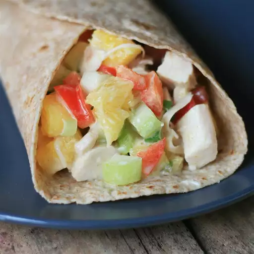
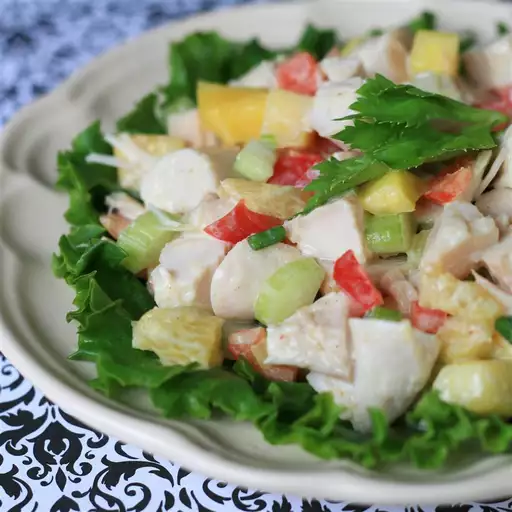

Tropical Turkey Salad


Dish Description
A tropical twist on the Waldorf Salad! Turkey breast and pineapple are tossed with crisp celery, red bell pepper, and green onion, finished with a creamy curried mango dressing.
Ingredients
- ⅓ cup low-fat sour cream
- 2 tablespoons mango chutney
- 1 tablespoon fresh lemon juice
- 1 tablespoon honey
- ¼ teaspoon curry powder
- 4 cups chopped cooked turkey
- 1 cup diced red bell pepper
- 1 cup diced celery
- 1 cup pineapple chunks
- 1 cup chopped orange segments
- ½ cup chopped green onion